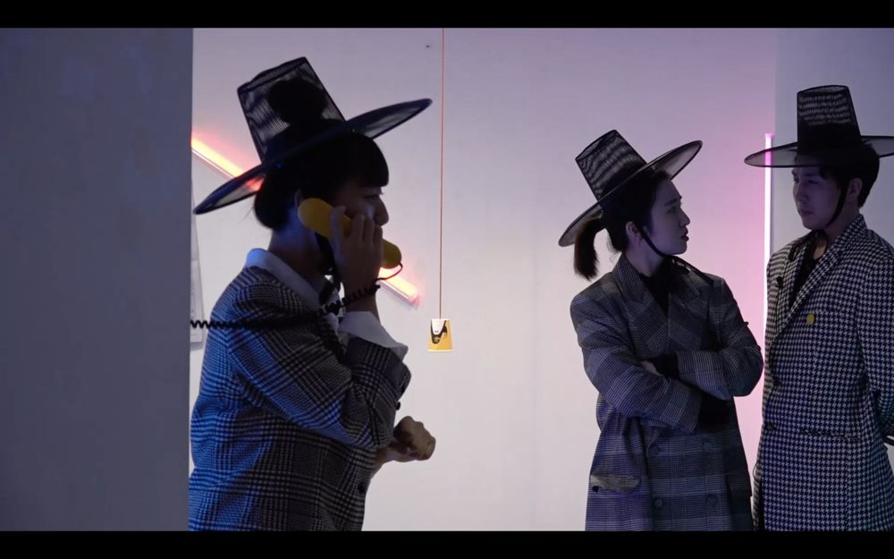

Green Pig > Archive > @GODBLOG

Jeanette Winterson's GODBLOG, commissioned by London's Bush Theatre for the 400th anniversary of the King James Bible, brings Genesis into 2011 Britain with the premise that God is on Twitter. This production rebuilt it around the questions "What if a God in human form were Korean rather than a white man?" and "If God were in Korea, what would God tweet?" It interprets our old culture through the Bible, the foundation of Western culture, and examines the Korean way of thinking through God's eyes.
2020.9.18–21 / 57th Gallery
Original work: Jeanette Winterson, GODBLOG
Director: Park Hyunji
Performers: Kim Hahui, Lee Minjeong, Lee Seunghun, Lee Jaehye, Lim Jeonghui
Adaptation & Dramaturg: Jeon Sunghyun
Art: Lim Yeji
Music: Park Goeun
Lighting design: Kim Sohyeon
Documentation & Filming: Han Munhui
Ticketing: Choi Munseok
Coordination: Kang Daeyeong
Graphic design: Kim Yeongseon
Previous: Contemporaries | Next: CAVE-2021 Seoul Version
Back to the archive | Any work
Published 2026.11.13